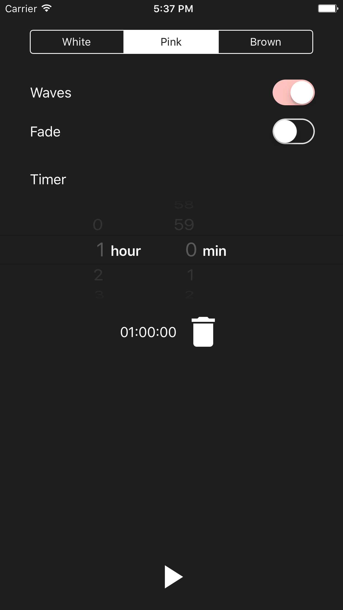
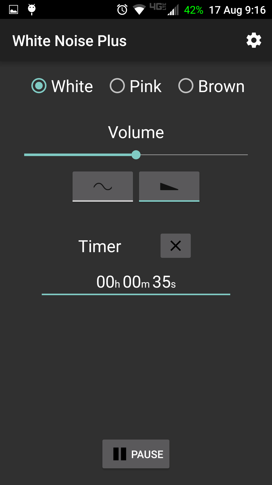
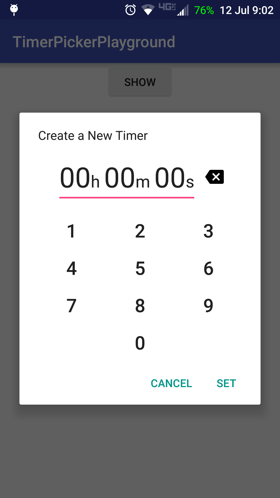

<br>
# David Albers
<br>
---
### Education
Bachelor of Science in Computer Science from the University of Tulsa
<br>Graduated May 2016, GPA: 3.9
---
### Experience
#### Current
Android Developer at First Orion
Since November 2016 in Little Rock, AR
* Primary developer for two web-connected, native Android apps. Assisted with two others.
* Used Retrofit and OkHttp for requests/responses from multiple webservices
* Handled push messages from both Google Cloud Messaging (GCM) and Firebase
* Utilized Realm for efficiently storing and reading large amounts of data
* Built reactive, Material UIs
* Worked on an Agile team with strict requirements defined by Business Analysts
* Improved quality of existing software and simplified build system
* Wrote UI and unit tests in Espresso, Mockito, Calabash, & Appium
* Used continous integration (Jenkins) to automate builds and unit testing
* Generated code coverage reports with Jacoco and Sonarqube from Jenkins
#### Previous
Software Engineer at CymSTAR from May to November 2016 &<br>
Software Intern from January to May 2016 in Tulsa, OK.
* Modified A-10 Simulator for added functionality and bug fixes
* Debugged and solved issues caused by upgrading real-time OS (VxWorks) on simulator
* Added functionality to Instructor Operating Software to improve simulator control
* Implemented additional constraints for scheduling genetic algorithm in C
* Stored data and verified algorithm results using MySQL
Software Intern at InvoTek from August 2011 to January 2016 in Alma, AR
* Created accessible user interfaces by providing alternative access methods such as eye-tracking
* Implemented Bluetooth communication in apps and developed custom Views in Android
* Developed desktop applications with C# and .NET
* Installed products for clients and demonstrated how to use products
---
### Projects
#### White Noise Plus for Android & iOS
* White noise app focused on useful, simple features
* Available on [Play Store](https://play.google.com/store/apps/details?id=dalbers.com.noise "App Link") and [App Store](https://github.com/davidalbers/whitenoise)


#### TimerPickerLibrary for Android
* Provides simple dialogs for creating a CountDown timer since those aren’t available in standard libraries
* Offers custom TextViews for displaying CountDownTimers

---
All projects are on [GitHub](https://www.github.com/davidalbers).<br>
Contact me on [LinkedIn](https://www.linkedin.com/in/davidgalbers).